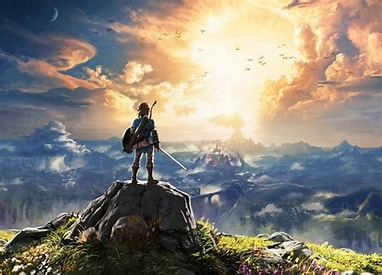

《塞尔达传说：荒野之息》— 神秘海拉尔的自由探索
《塞尔达传说：荒野之息》是由Nintendo开发的一款开放世界动作冒险游戏。作为塞尔达传说系列的最新作品，游戏提供了一个广阔而精细的世界，玩家将扮演林克，在海拉尔大陆上展开一场自由的探险之旅，解开史诗级的谜题，挑战强大的敌人和怪兽。
游戏特色
- 海拉尔大陆：一个充满神秘的广阔世界，等待玩家来探索。
- 丰富的物理引擎：可以利用环境要素解决谜题、战斗和探险。
- 多样的环境：从草原到雪山再到沙漠，各类环境创造不同的冒险体验。
- 高度自由的探险：玩家可以自由决定自己的旅行路线、解谜策略和战斗方式。
游戏截图


下载链接
点击以下链接下载《塞尔达传说：荒野之息》：
下载《塞尔达传说：荒野之息》系统要求
- 操作系统：Nintendo Switch
- 存储空间：需要 13.4 GB 可用空间
常见问题解答 (FAQ)
问：游戏是否支持多人模式？
答：不，游戏是单人模式，但有丰富的内容和探索要素。
问：游戏是否有DLC内容？
答：是的，游戏有两个DLC扩展包，提供更多的任务和挑战。
用户评分和评价
评分：★★★★★
“这款游戏真是太棒了！画面精美，玩法丰富。”
评分：★★★★☆
“游戏内容很丰富，但有时候会有一些小bug。”
玩家评论
“《塞尔达传说：荒野之息》是一场精彩绝伦的探险，每个角落都充满了未知和奇迹。”